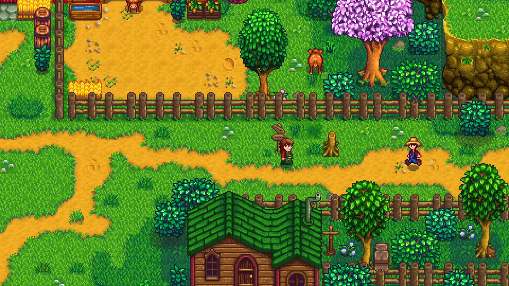

Organize sua fazenda

Faça Amizades

Sobre o Jogo
Stardew Valley é um encantador e cativante jogo de simulação de vida no campo, desenvolvido por ConcernedApe. Lançado em 2016, o jogo ganhou popularidade devido à sua jogabilidade relaxante, gráficos pixelizados nostálgicos e a variedade de atividades que oferece. No início do jogo, o jogador herda uma fazenda decadente de seu avô e decide deixar a agitação da cidade para começar uma nova vida agrícola. O jogo oferece liberdade para os jogadores explorarem, cultivarem plantações, criarem animais, pescarem, minerarem e interagirem com os coloridos habitantes da cidade de Pelican Town. Ao longo das estações do ano, os jogadores plantam e colhem uma variedade de culturas, participam de festivais, aprimoram suas habilidades em diferentes áreas, como pesca, mineração e agricultura, e podem até mesmo desenvolver relacionamentos românticos com os habitantes locais.
Compre

Você herdou a antiga fazenda do seu avô, em Stardew Valley. Com ferramentas de segunda-mão e algumas moedas, você parte para dar início a sua nova vida. Será que você vai aprender a viver da terra, a transformar esse matagal em um próspero lar?
O Guia de Stardew Valley serve como um companheiro abrangente para jogadores que estão explorando o encantador mundo de Stardew Valley. Repleto de informações detalhadas, dicas e insights, este guia foi projetado para aprimorar sua experiência de jogo e ajudá-lo a aproveitar ao máximo o seu tempo em Pelican Town.
Um jogo de tabuleiro cooperativo de agricultura e amizade. Trabalhe junto com seus colegas agricultores para salvar o vale da nefasta Joja Corporation! Para fazer isso, você precisará cultivar, pescar, fazer amigos e encontrar todos os tipos de recursos diferentes para cumprir os objetivos do vovô e restaurar o Centro comunitário.
Música